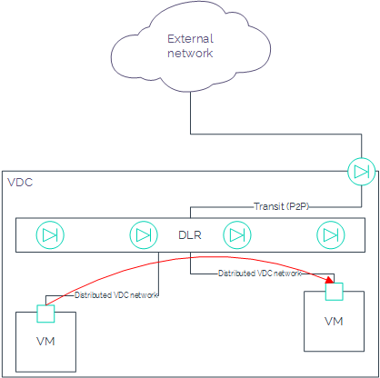
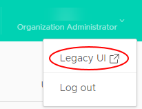
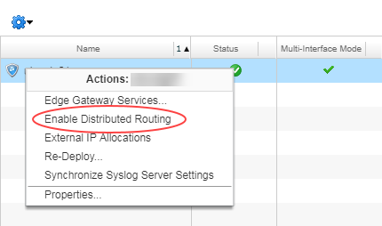
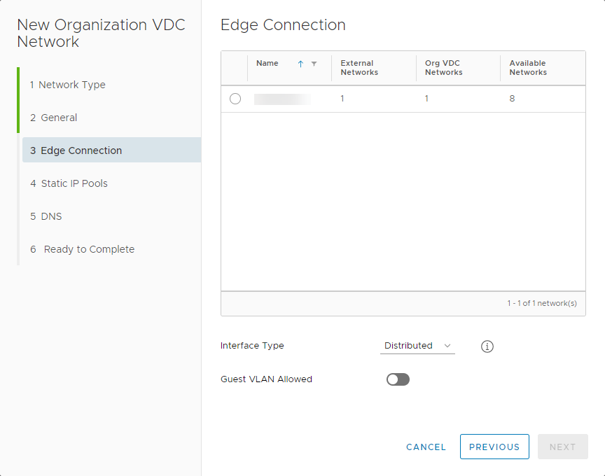

How to configure a Distributed Logical Router
Overview
UKCloud for VMware provides Distributed Logical Router (DLR) functionality as part of its Advanced Management bundle (additional charges apply). DLR optimises the routing of east-west traffic within your VDCs, using a hypervisor on the source VM to limit traffic flow to a maximum of two hosts (the source and a destination), without the need to route traffic back through the edge gateway. As well as providing much better performance, DLR can scale up to 1000 routed logical networks (rather than the 10 logical network limit imposed by traditional edge gateway routing).

Before you begin
Before enabling DLR, consider the following:
- You must have purchased the Advanced Management bundle for your UKCloud for VMware service
- You must have converted your edge gateway to an advanced gateway (see How to convert your edge to an advanced gateway)
- Your advanced gateway must have one free interface for DLR to use for the transit (P2P) network
- IPv6 is not supported with DLR
- L2 VPN is not supported on a distributed VDC network
- vApp routed networks are not supported
- You can only have one DLR instance per VDC edge gateway
- You can create up to 1000 distributed networks per edge gateway
- You cannot distribute a VLAN-based network
- Your local subnets should not overlap with the transit network (
10.255.255.248/30) - You cannot modify the transit connection between the edge gateway and DLR
- You can change auto-generated DHCP and static route configurations on the edge gateway
- To disable DLR on the edge gateway, you must first remove all distributed networks
- You can migrate existing VDC networks to distributed network without service disruption
- You cannot run more than one routing protocol on each DLR (BGP or OSPF)
- If you use OSPF, you cannot run it on more than one DLR uplink
- Dynamic routing protocols are only supported on uplink interfaces
Enabling distributed routing for Distributed Logical Router
To enable distributed routing, you must use the vCloud Director Web Console.
In the top-right corner of the vCloud Director Tenant UI, click your user name, then select Legacy UI.

Select the Administration tab.

Double-click your VDC, then select the Edge Gateways tab.

Right click the edge gateway for which you want to enable DLR and select Enable Distributed Routing.

Click Yes to confirm your selection.
To return to the Tenant UI, click Try the new portal at the top of the page.
Creating a distributed network
After you've enabled distributed routing, you can create your distributed networks. You can create up to 1000 distributed networks per edge gateway.
In the vCloud Director Virtual Datacenters dashboard, select your VDC.
In the left navigation panel, select Networks.

Click Add.

In the Network Type page of the New Organization VDC Network dialog box, select Routed then click Next.

On the General page, enter a Name and Description for the network.
In the Gateway CIDR field, the gateway address for the network.
Select the Shared option to make the network available to other VDCs within the same region.

Click Next.
On the Edge Connection page, select the edge gateway that you want your network to connect to.
Note
The edge must be an advanced gateway and must have distributed routing enabled.
From the Interface Type list, select Distributed.

Click Next.
Complete the remaining fields in the dialog box as you would for any other routed network.
For more detailed instructions, see How to create a routed VDC network.
When you're done, click Finish.


Feedback
If you find an issue with this article, click Improve this Doc to suggest a change. If you have an idea for how we could improve any of our services, visit the Ideas section of the UKCloud Community.